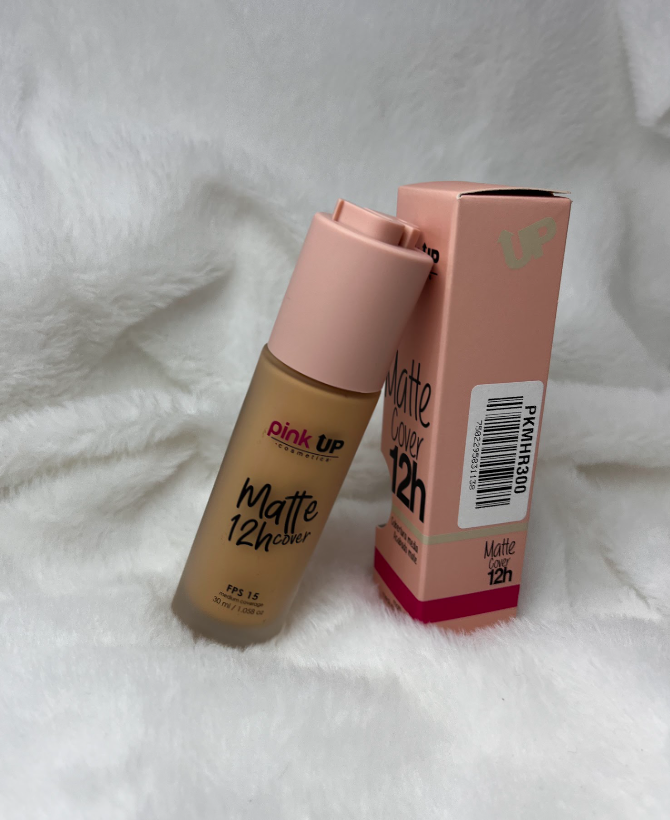
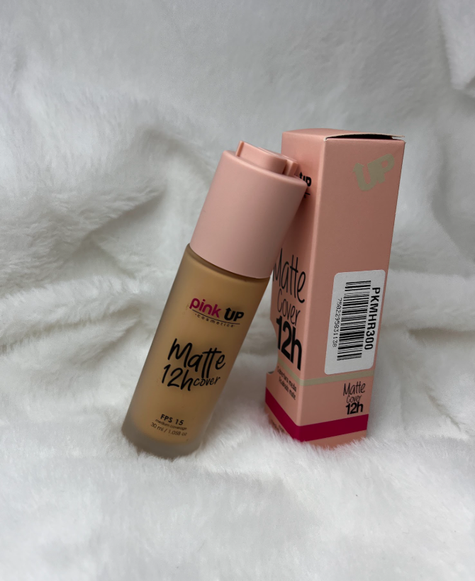

¿Quieres salir de fiesta y tu cara brilla como un foco?
El nuevo polvo corrector de Pink up; Cold el polvo traslucido
que deja en el rostro una textura tersa y además sus micro destellos que te harán lucir
con un make up luminoso.
♥ No deja residuos manteniendo tu piel tersa, fresca y luminosa
durante horas.
♥ Sus colores se adaptan a todos los tipos y tonos de piel.

 

La base de maquillaje Pink Up te ayudará a lucir un rostro impecable,
cubriendo las imperfecciones y unificando el tono de tu piel.
¡Disfruta del sol sin preocupaciones!
♥ Con esta base de maquillaje con factor de protección solar podrás
disfrutar de las actividades al aire libre sin preocuparte por los
efectos nocivos del sol en tu tez. Además de unificar el tono de tu
piel y cubrir imperfecciones, esta base te protege contra los rayos
UVB/UVA y ayuda a evitar la aparición de manchas del sol en tu rostro.

¡Corrector líquido de larga duración que cubrirá perfectamente
todas las imperfecciones de la piel del rostro!
Acabado mate con
textura suave que evita que se marquen las líneas de expresión en
la zona de ojeras.
♥ Ayuda a iluminar la zona de las ojeras para
disminuir las zonas oscuras.
♥ Formulado con una textura super
suave que no se reseca ni se cuartea.
♥ Fácil aplicación gracias
a su práctico aplicador de pincel.
♥ Cubre perfectamente paño,
pecas, puntos rojos y cualquier tipo de mancha en la piel.
¡Destaca tu mirada!
La punta del pincel es ideal para trazar líneas finas y precisas.
♥ Define tus ojos en un solo trazo y olvidate de retocar con este
delineador de larga duración.
♥ No se corre, no mancha ni se desvanece
gracias a su fórmula resistente a la humedad y a la actividad
constante.

¡Gel de ceja que aporta definición, fijación y volumen a tus cejas
en un solo paso!
♥ Su fórmula de larga duración no grasa, peina y fija las cejas a la
perfección aportando volumen.
♥ Su suave textura moldea el vello de
tus cejas logrando que luzcan definidas, su color transparente se
combina y se adaptan a cualquier color de cabello.
¡Sé protagonista con la ayuda de las Tintas para labios Pink Up!
Su presentación líquida te garantizará un acabado prolijo y
100% cubritivo.
♥ Para lograr una boca perfecta comienza
utilizando la punta del aplicador para delinear cuidadosamente
los labios y luego rellenalos con color, comenzando desde el
centro hasta los bordes externos, con la precausión de no
salirte del límite.
¡Ya estás lista para lucir tu labial preferido!

♥ ¡Evita el efecto de rebote blanco en las fotos!
Sella y matifica tu makeup con Matte HD, Polvo traslúcido compacto
matificante. Su textura suave se mezcla perfectamente con tu base
dejando un acabado mate por largas horas.

¡Base en polvo con esponja y espejo 3 en 1!
♥ Maquillaje en polvo con acabado mate aterciopelado de larga duración,
sella perfectamente sin obstruir los poros de la piel.
♥ Polvo compacto mineral de cobertura media a completa, brinda un
acabado mate con efecto de piel de porcelana.
♥ Es de larga duración y no obstruye los poros de la piel, evitando
que salgan imperfecciones o granitos.
♥ Contiene minerales que nutren la piel e hidratan.
♥ Gracias a su efecto matificante, evita que la piel del rostro brille
al pasar las horas.


¡Pink Up 3d Eye Lashes Reutilizables!
♥ Estas pestañas 3D son flexibles, tienen fibra ultra delgada,
un efecto tridimensional, ligeras,
de fácil aplicación, cruelty Free, ¡y en 12 modelos diferentes!

¡Brillo hidratante de efecto húmedo con glitter para labios!
♥ Es un gloss con glitters de larga duración que aporta gran
cantidad de destellos, además de agregarles un toque de color.
Contiene alta cantidad de glitters e ingredientes naturales
que aportan mayor humectación y suavidad, dejando un acabado
iridiscente y destellante en los labios.
Ilumina tu maquillaje y luce
radiante con Luminous Powder, Iluminador en polvo
compacto de textura suave.
♥ ¡Como típ puedes aplicarlo en húmedo,
rociando un poco tu brocha con el fijador de maquillaje y
dejarás una mayor pigmentación y duración!
¡Crea una capa fina que protege el maquillaje,
proporcionando hidratación y frescura sin sensación pegajosa
y ayudando a controlar el brillo indeseado!
El fijador de Maquillaje FX Fixer Pink Up contiene beneficios como:
♥ Refresca
♥ Hidrata la piel
♥ Fija el maquillaje durante extensas horas
♥ No es pegajoso
♥ Controla el brillo
♥ Apto para diversas pieles